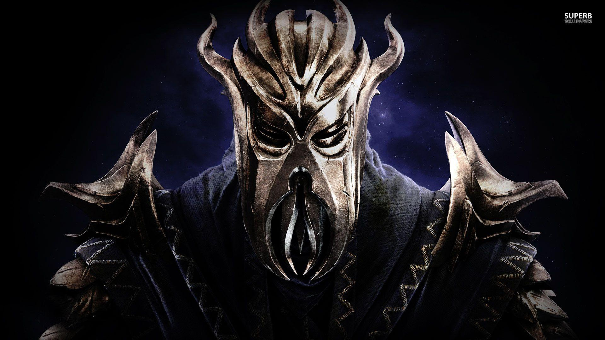

Gledos
Explorador / Protetor
Classe
Local / Período
Verona, Itália
Século XVI
FOR 12
DES 14
CON 13
INT ??
SAB 16
CAR 12

Habilidades Especiais
• Rastreamento impecável, capaz de seguir pessoas desaparecidas.
• Sobrevivência urbana e selvagem.
• Instinto de proteção a vulneráveis, mesmo sem apego emocional.
Equipamentos
Armas: Cajado antigo (uso limitado).
Armadura: Manto simples reforçado.
Itens: Grimório selado, moedas, amuleto de proteção.
Lore
Gledos não nasceu vazio. Ele foi esvaziado.
Após a tragédia mais violenta de sua vida, seus sentimentos cessaram.
Um poder imensurável despertou — suficiente para extinguir nações —
mas sem propósito para ser usado.
Hoje ele vive como um explorador comum, aceitando missões apenas para sobreviver.
Não cria laços, não sente culpa, não busca redenção.
O mundo existe. E ele continua nele.